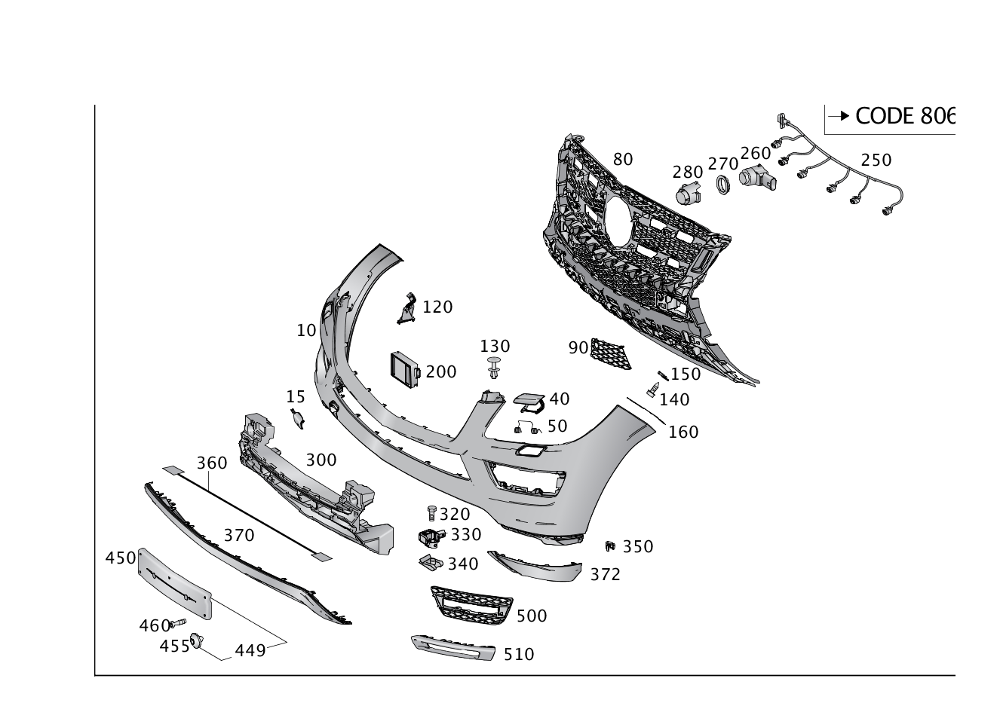

| № | Артикул | Название | Кол. | Примечание |
|---|---|---|---|---|
| 10 | A 166 885 27 25 | Облицовка бампера | 1 | Спереди сверху |
| 10 | A 166 885 17 38 | Облицовка бампера | 1 | Спереди сверху |
| 10 | A 166 885 18 38 | Облицовка бампера | 1 | Спереди сверху |
| 10 | A 166 885 18 00 | Облицовка бампера | 1 | Спереди сверху |
| 10 | A 166 885 19 00 | Облицовка бампера | 1 | Спереди сверху |
| 10 | A 166 885 31 25 | Облицовка бампера | 1 | Спереди сверху |
| 10 | A 166 885 64 25 | Облицовка бампера | 1 | Спереди сверху |
| 10 | A 166 885 65 25 | Облицовка бампера | 1 | Спереди сверху |
| 15 | A 166 884 30 22 | Крышка (ABDECKUNG) | 1 | БУКСИРНАЯ ПРОУШИНА |
| 15 | A 292 885 49 22 | Кожух зоны бампера | 1 | Слева |
| 15 | A 292 885 50 22 | Кожух зоны бампера | 1 | Справа |
| 40 | A 166 860 00 08 | Накладка фароочистителя | 1 | Слева |
| 40 | A 166 860 00 08 | Накладка фароочистителя | 1 | Слева |
| 40 | A 166 860 03 08 | Накладка фароочистителя | 1 | Справа |
| 40 | A 166 860 03 08 | Накладка фароочистителя | 1 | Справа |
| 40 | A 166 885 15 22 | Кожух зоны бампера (ABDECKUNG STOSSF.BEREICH) | 1 | Слева |
| 40 | A 166 885 16 22 | Кожух зоны бампера (ABDECKUNG STOSSF.BEREICH) | 1 | Справа |
| 50 | A 000 993 04 14 | Пружинная скоба (BUEGELFEDER) | 2 | ФАРООЧИСТИТЕЛЬ |
| 60 | A 166 885 50 22 | Кожух зоны бампера (ABDECKUNG STOSSF.BEREICH) | 1 | СПЕРЕДИ СНИЗУ |
| 60 | A 292 885 51 22 | Кожух зоны бампера (ABDECKUNG STOSSF.BEREICH) | 1 | Посередине |
| 62 | A 003 994 86 45 | SPRING NUT (FEDERMUTTER) | 6 | К ЗАЩИТН.ОБЛИЦОВКЕ; ST 4.8/2.5\-5.0 MM |
| 62 | A 003 994 86 45 | SPRING NUT (FEDERMUTTER) | 6 | КРЕПЛЕНИЕ НАКЛАДКИ (ЦЕНТР.); ST 4.8/2.5\-5.0 MM |
| 65 | A 166 885 51 22 | Крышка буксирной проушины (ABDECKUNG ABSCHLEPPOESE) | 1 | Буксирная проушина |
| 65 | A 292 885 57 22 | Крышка буксирной проушины (ABDECKUNG ABSCHLEPPOESE) | 1 | Буксирная проушина |
| 67 | A 220 885 00 59 | Удерживающая лента (FANGBAND) | 1 | КРЫШКА БУКСИРОВОЧНОЙ ПРОУШИНЫ |
| 67 | A 220 885 00 59 | Удерживающая лента (FANGBAND) | 1 | Буксирная проушина |
| 70 | A 201 990 02 92 | Распорная заклепка | 4 | Крепление крышки посередине; 8 MM |
| 75 | A 003 991 02 70 | Крепежная скоба (BEFESTIGUNGSKLAMMER) | 1 | КРЕПЛЕНИЕ ОБЛИЦОВКИ СРЕДН.СНИЗУ |
| 80 | A 166 885 13 65 | Базовая опора бампера (GRUNDTRAEGER STOSSFAENGER) | 1 | Посередине |
| 80 | A 166 885 49 65 | Базовая опора бампера (GRUNDTRAEGER STOSSFAENGER) | 1 | Посередине |
| 80 | A 292 885 09 65 | Базовая опора бампера (GRUNDTRAEGER STOSSFAENGER) | 1 | Посередине |
| 80 | A 166 885 23 65 | Базовая опора бампера (GRUNDTRAEGER STOSSFAENGER) | 1 | Посередине |
| 80 | A 166 885 21 65 | Базовая опора бампера (GRUNDTRAEGER STOSSFAENGER) | 1 | Посередине |
| 80 | A 292 885 09 65 | Базовая опора бампера (GRUNDTRAEGER STOSSFAENGER) | 1 | Посередине |
| 82 | N 000000 000529 | - Шуруп (BLECHSCHRAUBE) | 8 | КРЕПЛЕНИЕ ОПОРНЫХ ПОПЕРЕЧИН БАГАЖНИКА НА КРЫШЕ; 4.8X19 |
| 83 | A 292 885 03 38 | Облицовка бампера (VERKLEIDUNG STOSSFAENGER) | 1 | В ЦЕНТРЕ СНИЗУ |
| 84 | N 000000 000529 | Шуруп (BLECHSCHRAUBE) | 2 | КРЕПЛЕНИЕ ОБЛИЦОВКИ; 4.8X19 |
| 85 | Q 0000000001 | ВАЖНАЯ ИНФОРМАЦИЯ | 1 | ДЕТАЛИ СМ.: 82/614 |
| 88 | A 222 750 01 14 | Держатель (HALTER) | 1 | Камера |
| 90 | A 166 885 13 22 | Кожух зоны бампера (ABDECKUNG STOSSF.BEREICH) | 1 | Слева |
| 90 | A 166 885 41 22 | Кожух зоны бампера (ABDECKUNG STOSSF.BEREICH) | 1 | Слева |
| 90 | A 166 885 14 22 | Кожух зоны бампера (ABDECKUNG STOSSF.BEREICH) | 1 | Справа |
| 90 | A 166 885 42 22 | Кожух зоны бампера (ABDECKUNG STOSSF.BEREICH) | 1 | Справа |
| 95 | A 166 885 51 14 | Держатель (HALTER) | 1 | КРЕПЛЕНИЕ КАМЕРЫ |
| 100 | A 124 990 04 92 | Распорная заклепка (SPREIZNIET) | 4 | Крепление облицовки; 6.5X18 |
| 105 | A 003 990 94 97 | Вытяжная заклепка (BLINDNIET) | 4 | Крепление облицовки |
| 105 | A 003 990 94 97 | Вытяжная заклепка (BLINDNIET) | 6 | Крепление облицовки |
| 110 | A 166 885 04 24 | Кожух зоны бампера (ABDECKUNG STOSSF.BEREICH) | 1 | Слева |
| 110 | A 166 885 51 00 | Кожух зоны бампера (ABDECKUNG STOSSF.BEREICH) | 1 | Слева |
| 110 | A 166 885 31 24 | Кожух зоны бампера (ABDECKUNG STOSSF.BEREICH) | 1 | Слева |
| 110 | A 166 885 05 24 | Кожух зоны бампера (ABDECKUNG STOSSF.BEREICH) | 1 | Справа |
| 110 | A 166 885 52 00 | Кожух зоны бампера (ABDECKUNG STOSSF.BEREICH) | 1 | Справа |
| 110 | A 166 885 32 24 | Кожух зоны бампера (ABDECKUNG STOSSF.BEREICH) | 1 | Справа |
| 115 | N 000000 000515 | Шуруп (BLECHSCHRAUBE) | 2 | |
| 117 | A 003 994 79 45 | SPRING NUT (FEDERMUTTER) | 2 | |
| 120 | A 166 885 09 14 | Держатель (HALTER) | 1 | Штекер |
| 120 | A 166 885 09 14 | Держатель (HALTER) | 1 | Штекер |
| 125 | A 166 885 55 00 | Базовая опора бампера (GRUNDTRAEGER STOSSFAENGER) | 1 | Спереди сверху |
| 127 | N 000000 000529 | Шуруп (BLECHSCHRAUBE) | 4 | КРЕПЛЕНИЕ ОПОРНЫХ ПОПЕРЕЧИН БАГАЖНИКА НА КРЫШЕ; 4.8X19 |
| 130 | A 000 991 72 40 | Распорная заклепка (SPREIZNIET) | 4 | БАМПЕР НА ФРОНТ. МОДУЛЕ |
| 140 | N 000000 000543 | Шуруп (BLECHSCHRAUBE) | 6 | КРЕПЛЕНИЕ БАМП. НА КРЫЛЕ; 6.3X19 |
| 140 | A 001 990 80 00 | Винт с 6-гр.гол. и шайбой (KOMBI-SECHSKANTSCHRAUBE) | 2 | БАМПЕР НА ФРОНТ. МОДУЛЕ; M6X19 |
| 150 | A 003 994 93 45 | SPRING NUT (FEDERMUTTER) | 6 | КРЕПЛЕНИЕ БАМП. НА КРЫЛЕ; 6.3 MM |
| 150 | A 004 994 17 45 | SPRING NUT (FEDERMUTTER) | 2 | БАМПЕР НА ФРОНТ. МОДУЛЕ; M6 |
| 160 | A 166 889 00 95 | Промежуточная прокладка (ZWISCHENLAGE) | 1 | Слева |
| 160 | A 166 889 07 95 | Промежуточная прокладка (ZWISCHENLAGE) | 1 | Справа |
| 170 | A 166 885 04 63 | Воздуховод (LUFTFUEHRUNG) | 1 | Посередине |
| 170 | A 166 885 05 63 | Воздуховод (LUFTFUEHRUNG) | 1 | Посередине |
| 180 | A 166 880 44 01 | Базовая опора бампера (GRUNDTRAEGER STOSSFAENGER) | 1 | Слева |
| 180 | A 166 880 45 01 | Базовая опора бампера (GRUNDTRAEGER STOSSFAENGER) | 1 | Справа |
| 185 | A 004 994 17 45 | - SPRING NUT (FEDERMUTTER) | 1 | ОПОРНЫЕ ПОПЕРЕЧИНЫ БАГАЖНИКА НА КРЫШЕ СЛЕВА; M6 |
| 185 | A 004 994 17 45 | - SPRING NUT (FEDERMUTTER) | 1 | ОПОРНЫЕ ПОПЕРЕЧИНЫ БАГАЖНИКА НА КРЫШЕ СПРАВА; M6 |
| 190 | A 166 885 64 00 | Кожух зоны бампера (ABDECKUNG STOSSF.BEREICH) | 1 | КАМЕРА |
| 200 | A 000 905 00 10 | Радарный датчик (RADARSENSOR) | 1 | Слева |
| 200 | A 000 905 57 01 | Радарный датчик (RADARSENSOR) | 1 | Слева |
| 200 | A 000 905 00 10 | Радарный датчик (RADARSENSOR) | 1 | Справа |
| 200 | A 000 905 57 01 | Радарный датчик (RADARSENSOR) | 1 | Справа |
| 200 | A 000 905 57 01 | Радарный датчик (RADARSENSOR) | 2 | Слева и справа |
| 200 | A 000 905 81 04 | Радарный датчик (RADARSENSOR) | 2 | Слева и справа |
| 200 | A 000 905 99 06 | Радарный датчик (RADARSENSOR) | 2 | Слева и справа |
| 205 | A 212 885 03 14 | Держатель (HALTER) | 1 | Крепление датчика |
| 205 | A 212 885 03 14 | Держатель (HALTER) | 2 | Крепление датчика |
| 210 | A 166 885 21 14 | Держатель (HALTER) | 1 | Колесная арка слева |
| 210 | A 166 885 21 14 | Держатель (HALTER) | 1 | Колесная арка слева |
| 210 | A 166 885 22 14 | Держатель (HALTER) | 1 | Колесная арка справа |
| 210 | A 166 885 22 14 | Держатель (HALTER) | 1 | Колесная арка справа |
| 215 | N 000000 000515 | Шуруп (BLECHSCHRAUBE) | 2 | КРЕПЛЕНИЕ КРОНШТЕЙНА |
| 220 | A 003 994 79 45 | SPRING NUT (FEDERMUTTER) | 2 | КРЕПЛЕНИЕ КРОНШТЕЙНА |
| 230 | A 166 620 57 01 | Рама фонаря (RAHMEN LEUCHTE) | 1 | Слева |
| 230 | A 166 620 58 01 | Рама фонаря (RAHMEN LEUCHTE) | 1 | СПРАВА |
| 235 | A 004 994 17 45 | - SPRING NUT (FEDERMUTTER) | 1 | Слева; M6 |
| 235 | A 004 994 17 45 | - SPRING NUT (FEDERMUTTER) | 1 | СПРАВА; M6 |
| 240 | A 166 905 94 02 | Датчик давления (DRUCKSENSOR) | 1 | Защита пешеходов |
| 240 | A 166 905 94 02 | Датчик давления (DRUCKSENSOR) | 1 | Защита пешеходов |
| 245 | A 166 991 00 70 | Пружинная скоба (FEDERKLAMMER) | 2 | |
| 250 | A 166 440 15 35 | Электрический жгут (ELEKTRISCHER LEITUNGSSATZ) | 1 | Система PARKTRONIC |
| 250 | A 292 540 96 05 | Электрический жгут (ELEKTRISCHER LEITUNGSSATZ) | 1 | Система PARKTRONIC |
| 250 | A 292 540 98 05 | Электрический жгут (ELEKTRISCHER LEITUNGSSATZ) | 1 | Система PARKTRONIC |
| 250 | A 292 540 42 01 | Электрический жгут (ELEKTRISCHER LEITUNGSSATZ) | 1 | Система PARKTRONIC |
| 250 | A 166 440 19 35 | Электрический жгут (ELEKTRISCHER LEITUNGSSATZ) | 1 | Система PARKTRONIC |
| 250 | A 292 540 43 01 | Электрический жгут (ELEKTRISCHER LEITUNGSSATZ) | 1 | Система PARKTRONIC |
| 250 | A 292 540 00 06 | Электрический жгут (ELEKTRISCHER LEITUNGSSATZ) | 1 | Система PARKTRONIC |
| 250 | A 292 540 44 01 | Электрический жгут (ELEKTRISCHER LEITUNGSSATZ) | 1 | Система PARKTRONIC |
| 250 | A 292 540 45 01 | Электрический жгут (ELEKTRISCHER LEITUNGSSATZ) | 1 | Система PARKTRONIC |
| 250 | A 166 440 17 35 | Электрический жгут (ELEKTRISCHER LEITUNGSSATZ) | 1 | Система PARKTRONIC |
| 250 | A 292 540 46 01 | Электрический жгут (ELEKTRISCHER LEITUNGSSATZ) | 1 | Система PARKTRONIC |
| 260 | A 212 542 00 18 | Датчик дистанции (ABSTANDSSENSOR) | 4 | Посередине |
| 260 | A 000 905 55 04 | Датчик дистанции (ABSTANDSSENSOR) | 2 | Слева и справа |
| 260 | A 212 542 01 18 | Датчик дистанции (ABSTANDSSENSOR) | 2 | СНАРУЖИ, СЛЕВА И СПРАВА |
| 260 | A 000 905 55 04 | Датчик дистанции (ABSTANDSSENSOR) | 2 | Посередине |
| 260 | A 000 905 55 04 | Датчик дистанции (ABSTANDSSENSOR) | 4 | Посередине |
| 260 | A 212 542 00 18 | Датчик дистанции (ABSTANDSSENSOR) | 2 | Посередине |
| 260 | A 212 542 00 18 | Датчик дистанции (ABSTANDSSENSOR) | 2 | Слева и справа изнутри |
| 260 | A 000 905 56 04 | Датчик дистанции (ABSTANDSSENSOR) | 2 | СНАРУЖИ СЛЕВА И СПРАВА |
| 270 | A 000 542 12 51 | Кольцо проставочное (ENTKOPPLUNGSRING) | 4 | Слева и справа |
| 270 | A 204 542 00 51 | Кольцо проставочное | 6 | Для датчика |
| 270 | A 221 542 00 51 | Проставочное кольцо (ABSTANDSRING) | 2 | Для датчика |
| 270 | A 000 542 12 51 | Кольцо проставочное (ENTKOPPLUNGSRING) | 2 | Посередине |
| 270 | A 000 542 12 51 | Кольцо проставочное (ENTKOPPLUNGSRING) | 4 | Посередине |
| 270 | A 204 542 00 51 | Кольцо проставочное | 4 | Посередине |
| 270 | A 000 542 12 51 | Кольцо проставочное (ENTKOPPLUNGSRING) | 2 | Слева и справа |
| 280 | A 212 884 01 22 | Крышка (ABDECKUNG) | 2 | Посередине |
| 280 | A 205 884 00 74 | Декоративная накладка (ABDECKBLENDE) | 2 | Слева и справа |
| 280 | A 205 884 00 74 | Декоративная накладка (ABDECKBLENDE) | 2 | Посередине |
| 280 | A 212 884 01 22 | Крышка (ABDECKUNG) | 2 | Посередине |
| 300 | A 166 885 02 37 | Энергопоглощающий демпфер (PRALLDAEMPFER) | 1 | Посередине |
| 300 | A 166 885 09 37 | Энергопоглощающий демпфер (PRALLDAEMPFER) | 1 | Посередине |
| 300 | A 166 885 84 00 | Энергопоглощающий демпфер (PRALLDAEMPFER) | 1 | Посередине |
| 300 | A 292 885 08 37 | Энергопоглощающий демпфер (PRALLDAEMPFER) | 1 | Посередине |
| 300 | A 166 885 14 37 | Энергопоглощающий демпфер (PRALLDAEMPFER) | 1 | Посередине |
| 300 | A 292 885 37 00 | Энергопоглощающий демпфер (PRALLDAEMPFER) | 1 | Посередине |
| 305 | A 166 885 85 00 | Крепежный уголок (BEFESTIGUNGSWINKEL) | 1 | Слева |
| 305 | A 166 885 86 00 | Крепежный уголок (BEFESTIGUNGSWINKEL) | 1 | Справа |
| 315 | A 166 885 21 23 | Кожух зоны бампера (ABDECKUNG STOSSF.BEREICH) | 1 | Слева |
| 315 | A 166 885 22 23 | Кожух зоны бампера (ABDECKUNG STOSSF.BEREICH) | 1 | Справа |
| 320 | N 910105 005003 | Винт с 6-гранной головкой (SECHSKANTSCHRAUBE) | 3 | Крепление датчика; M5X20 |
| 330 | A 166 821 01 51 | Датчик ускорения (BESCHLEUNIGUNGSSENSOR) | 3 | СПЕРЕДИ СНИЗУ |
| 340 | A 004 994 17 45 | SPRING NUT (FEDERMUTTER) | 3 | Крепление датчика; M6 |
| 340 | A 004 994 13 45 | предохранитель (SICHERUNG) | 3 | Крепление датчика |
| 340 | A 004 994 13 45 | предохранитель (SICHERUNG) | 3 | Крепление датчика |
| 350 | A 008 988 68 78 | Скоба (KLAMMER) | 8 | |
| 360 | A 166 540 83 32 | Электрический жгут (ELEKTRISCHER LEITUNGSSATZ) | 1 | В бампере спереди |
| 360 | A 166 540 80 32 | Электрический жгут (ELEKTRISCHER LEITUNGSSATZ) | 1 | В бампере спереди |
| 360 | A 166 540 55 15 | Электрический жгут (ELEKTRISCHER LEITUNGSSATZ) | 1 | В бампере спереди |
| 360 | A 292 540 93 05 | Электрический жгут (ELEKTRISCHER LEITUNGSSATZ) | 1 | В бампере спереди |
| 360 | A 166 540 22 02 | Электрический жгут (ELEKTRISCHER LEITUNGSSATZ) | 1 | РАЗЪЁМ / КАМЕРА |
| 360 | A 166 440 16 35 | Электрический жгут (ELEKTRISCHER LEITUNGSSATZ) | 1 | СИСТЕМА ПРЕДУПРЕЖДЕНИЯ О ВОЗМОЖНОМ СТОЛКНОВЕНИИ |
| 360 | A 292 540 97 05 | Электрический жгут (ELEKTRISCHER LEITUNGSSATZ) | 1 | СИСТЕМА ПРЕДУПРЕЖДЕНИЯ О ВОЗМОЖНОМ СТОЛКНОВЕНИИ |
| 360 | A 166 440 18 35 | Электрический жгут (ELEKTRISCHER LEITUNGSSATZ) | 1 | ДАТЧИК РАДАРНЫЙ |
| 360 | A 292 540 99 05 | Электрический жгут (ELEKTRISCHER LEITUNGSSATZ) | 1 | ДАТЧИК РАДАРНЫЙ |
| 360 | A 166 440 58 36 | Электрический жгут (ELEKTRISCHER LEITUNGSSATZ) | 1 | КАМЕРА |
| 360 | A 166 440 58 36 | Электрический жгут (ELEKTRISCHER LEITUNGSSATZ) | 1 | КАМЕРА |
| 370 | A 166 885 28 25 | Облицовка бампера (VERKLEIDUNG STOSSFAENGER) | 1 | Спереди снизу |
| 370 | A 166 885 05 01 | Облицовка бампера (VERKLEIDUNG STOSSFAENGER) | 1 | Спереди снизу |
| 370 | A 166 885 21 38 | Облицовка бампера (VERKLEIDUNG STOSSFAENGER) | 1 | Спереди снизу |
| 370 | A 292 885 58 22 | Кожух зоны бампера (ABDECKUNG STOSSF.BEREICH) | 1 | Спереди снизу |
| 370 | A 292 885 22 00 | Кожух зоны бампера (ABDECKUNG STOSSF.BEREICH) | 1 | Спереди снизу |
| 370 | A 166 885 66 25 | Облицовка бампера (VERKLEIDUNG STOSSFAENGER) | 1 | Спереди снизу |
| 372 | A 166 885 29 25 | Облицовка бампера (VERKLEIDUNG STOSSFAENGER) | 1 | ВНИЗУ СЛЕВА |
| 372 | A 166 885 30 25 | Облицовка бампера (VERKLEIDUNG STOSSFAENGER) | 1 | СНИЗУ СПРАВА |
| 375 | A 003 994 86 45 | SPRING NUT (FEDERMUTTER) | 2 | КРЕПЛЕНИЕ ОБЛИЦОВКИ; ST 4.8/2.5\-5.0 MM |
| 380 | A 166 885 45 65 | Базовая опора бампера (GRUNDTRAEGER STOSSFAENGER) | 1 | Посередине |
| 380 | A 292 885 03 00 | Кожух зоны бампера (ABDECKUNG STOSSF.BEREICH) | 1 | Слева |
| 380 | A 292 885 23 00 | Кожух зоны бампера (ABDECKUNG STOSSF.BEREICH) | 1 | Слева |
| 380 | A 166 885 47 65 | Базовая опора бампера (GRUNDTRAEGER STOSSFAENGER) | 1 | Посередине |
| 390 | A 166 885 24 23 | Крышка буксирной проушины (ABDECKUNG ABSCHLEPPOESE) | 1 | Буксирная проушина |
| 390 | A 292 885 04 00 | Кожух зоны бампера (ABDECKUNG STOSSF.BEREICH) | 1 | Справа |
| 390 | A 292 885 24 00 | Кожух зоны бампера (ABDECKUNG STOSSF.BEREICH) | 1 | Справа |
| 400 | A 166 885 00 59 | Удерживающая лента | 1 | Буксирная проушина |
| 410 | A 166 885 88 22 | Кожух зоны бампера (ABDECKUNG STOSSF.BEREICH) | 1 | Слева |
| 410 | A 166 885 89 22 | Кожух зоны бампера (ABDECKUNG STOSSF.BEREICH) | 1 | Справа |
| 449 | A 166 880 12 44 | Накладка номерного знака (KENNZEICHENBLENDE) | 1 | |
| 449 | A 166 880 13 44 | Накладка номерного знака (KENNZEICHENBLENDE) | 1 | |
| 450 | A 166 880 14 44 | Накладка номерного знака (KENNZEICHENBLENDE) | 1 | |
| 450 | A 292 880 12 44 | Накладка номерного знака (KENNZEICHENBLENDE) | 1 | |
| 450 | A 166 885 12 81 | Накладка номерного знака (KENNZEICHENBLENDE) | 1 | |
| 450 | A 166 885 03 81 | Накладка номерного знака (KENNZEICHENBLENDE) | 1 | |
| 450 | A 166 880 15 44 | Накладка номерного знака (KENNZEICHENBLENDE) | 1 | |
| 450 | A 292 880 22 44 | Накладка номерного знака (KENNZEICHENBLENDE) | 1 | |
| 450 | A 166 885 04 81 | Накладка номерного знака (KENNZEICHENBLENDE) | 1 | |
| 450 | A 166 885 14 81 | Накладка номерного знака (KENNZEICHENBLENDE) | 1 | |
| 450 | A 166 880 16 44 | Накладка номерного знака (KENNZEICHENBLENDE) | 1 | |
| 450 | A 292 885 10 81 | Накладка номерного знака (KENNZEICHENBLENDE) | 1 | |
| 450 | A 166 885 05 81 | Накладка номерного знака (KENNZEICHENBLENDE) | 1 | |
| 450 | A 166 885 04 81 | - Накладка номерного знака (KENNZEICHENBLENDE) | 1 | |
| 450 | A 166 885 13 81 | Накладка номерного знака (KENNZEICHENBLENDE) | 1 | |
| 450 | A 166 880 18 44 | Накладка номерного знака (KENNZEICHENBLENDE) | 1 | |
| 450 | A 292 880 14 44 | Накладка номерного знака (KENNZEICHENBLENDE) | 1 | |
| 450 | A 166 885 28 81 | Накладка номерного знака (KENNZEICHENBLENDE) | 1 | |
| 450 | A 166 880 05 44 | Накладка номерного знака (KENNZEICHENBLENDE) | 1 | |
| 450 | A 166 885 12 81 | - Накладка номерного знака (KENNZEICHENBLENDE) | 1 | |
| 455 | A 009 990 84 04 | - Винт с полукругл.головой (LINSENKOPFSCHRAUBE M BUND) | 1 | Крепление рамки номерного знака; M6X6 |
| 455 | A 009 990 84 04 | - Винт с полукругл.головой (LINSENKOPFSCHRAUBE M BUND) | 2 | Крепление рамки номерного знака; M6X6 |
| 457 | A 004 994 14 45 | SPRING NUT (FEDERMUTTER) | 4 | Крепление рамки номерного знака; M6 |
| 457 | A 004 994 15 45 | предохранитель (SICHERUNG) | 4 | Крепление рамки номерного знака; M6 |
| 457 | A 004 994 14 45 | - SPRING NUT (FEDERMUTTER) | 4 | Крепление рамки номерного знака; M6 |
| 457 | A 126 990 11 52 | - Квадратная гайка (VIERKANTMUTTER) | 2 | Крепление рамки номерного знака |
| 457 | N 000562 006002 | - Гайка (MUTTER) | 2 | Крепление рамки номерного знака |
| 460 | A 163 990 03 36 | - Винт полупотай (FLACHRUNDSCHRAUBE) | 2 | КРЕПЛЕНИЕ НАКЛАДКИ НОМЕРНОГО ЗНАКА; 5X25 |
| 460 | A 163 990 03 36 | - Винт полупотай (FLACHRUNDSCHRAUBE) | 4 | КРЕПЛЕНИЕ НАКЛАДКИ НОМЕРНОГО ЗНАКА; 5X25 |
| 460 | N 000000 004778 | Винт (SCHRAUBE) | 2 | КРЕПЛЕНИЕ НАКЛАДКИ НОМЕРНОГО ЗНАКА |
| 460 | A 163 990 03 36 | - Винт полупотай (FLACHRUNDSCHRAUBE) | 2 | КРЕПЛЕНИЕ НАКЛАДКИ НОМЕРНОГО ЗНАКА; 5X25 |
| 460 | A 009 990 84 04 | - Винт с полукругл.головой (LINSENKOPFSCHRAUBE M BUND) | 2 | КРЕПЛЕНИЕ НАКЛАДКИ НОМЕРНОГО ЗНАКА; M6X6 |
| 480 | A 004 994 14 45 | SPRING NUT (FEDERMUTTER) | 2 | КРЕПЛЕНИЕ НАКЛАДКИ НОМЕРНОГО ЗНАКА; M6 |
| 490 | A 163 990 03 36 | Винт полупотай (FLACHRUNDSCHRAUBE) | 4 | КРЕПЛЕНИЕ НАКЛАДКИ НОМЕРНОГО ЗНАКА; 5X25 |
| 500 | A 166 884 37 22 | Крышка (ABDECKUNG) | 1 | СЛЕВА |
| 500 | A 166 885 45 22 | Кожух зоны бампера (ABDECKUNG STOSSF.BEREICH) | 1 | СЛЕВА |
| 500 | A 292 885 53 22 | Кожух зоны бампера (ABDECKUNG STOSSF.BEREICH) | 1 | СЛЕВА |
| 500 | A 166 885 90 22 | Кожух зоны бампера (ABDECKUNG STOSSF.BEREICH) | 1 | СЛЕВА |
| 500 | A 166 884 44 22 | Крышка (ABDECKUNG) | 1 | СПРАВА |
| 500 | A 166 885 44 22 | Кожух зоны бампера (ABDECKUNG STOSSF.BEREICH) | 1 | СПРАВА |
| 500 | A 292 885 54 22 | Кожух зоны бампера (ABDECKUNG STOSSF.BEREICH) | 1 | СПРАВА |
| 500 | A 166 885 91 22 | Кожух зоны бампера (ABDECKUNG STOSSF.BEREICH) | 1 | СПРАВА |
| 510 | A 166 885 17 74 | Декоративная накладка (ZIERBLENDE) | 1 | СЛЕВА |
| 510 | A 166 884 53 22 | Крышка (ABDECKUNG) | 1 | СЛЕВА |
| 510 | A 166 885 18 74 | Декоративная накладка (ZIERBLENDE) | 1 | СПРАВА |
| 510 | A 166 884 54 22 | Крышка (ABDECKUNG) | 1 | СПРАВА |
Позиций: 217 · подписано на схемах: 217 · колесо — плавный зум в курсор, перетаскивание — пан, двойной клик — зум, клик по артикулу — скопировать.